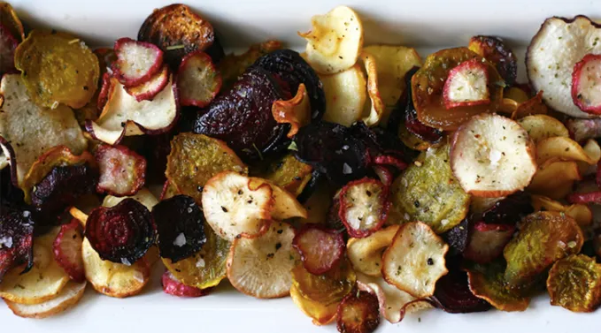

Veggie Chips
Home

Description
Crispy, crunchy, and guilt-free — these Veggie Chips are proof that vegetables can be just as addictive as potato chips (but with slightly better karma). Snack responsibly… or don’t, we won’t tell!"
Indgredients
- 4 small golden beets
- 4 small red beets
- 2 small turnips
- 2 medium parsnips
- 1 bunch radishes
- 3 tablespoons extra-virgin olive oil
- 1½ tablespoons salt
- 2 teaspoons freshly ground black pepper
- 3 tablespoons chopped fresh herbs (such as rosemary, sage, and/or thyme)
Step by Step Guide
- Preheat the oven to 400°F. Line two baking sheets with parchment paper.
- Thinly slice the vegetables to about ⅛ inch thick (as thin as you can). Using a mandoline or the slicing side of a box grater can speed up the process, but a knife works just as well.
- Toss the veggies into a large bowl with the olive oil (you may want to toss the red beets separately to avoid turning everything pink). Spread them in an even layer onto the prepared baking sheets, making sure they do not overlap too much.
- Sprinkle the salt, pepper and herbs evenly over the two baking sheets. Roast the vegetables until golden brown and crisp, 20 to 25 minutes. Cool completely before serving. Store in an airtight container to maintain the crisp texture for up to one week.
Fancy something different? why not try these instead?